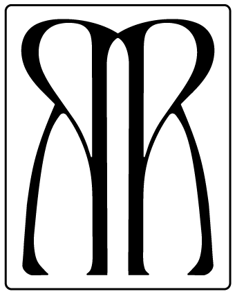
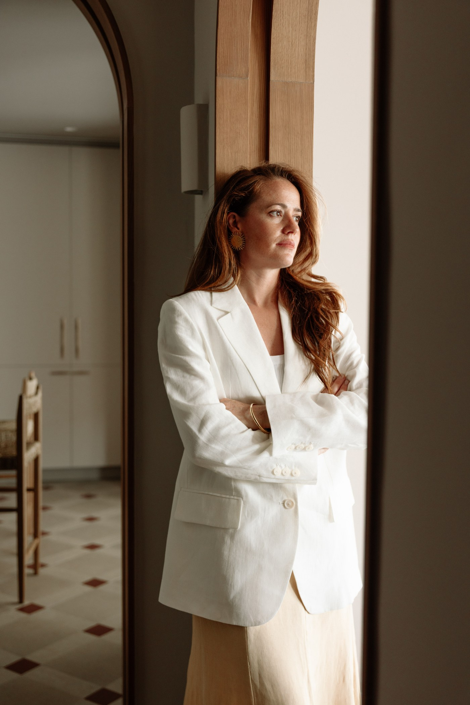

Claudia Pascual Roura
Interior Designer
Claudia Pascual Roura es diseñadora de interiores y fundadora de RAWRA Studio, con experiencia internacional en proyectos residenciales y hospitality.
Su trayectoria comienza en el sector de la moda, colaborando con marcas internacionales de lujo como Hermès, Castañer o Tom Ford, lo que ha definido una mirada especialmente cuidada hacia los materiales, el color y el detalle.
Su paso por Kettle Collective, estudio internacional de arquitectura e interiorismo en Dubái, consolidó una metodología rigurosa y una visión integral, donde arquitectura, interiorismo y cuidado por el detalle se conciben como un todo.
A través de RAWRA Studio, desarrolla proyectos que buscan crear espacios atemporales, sensibles y funcionales, acompañando a cada cliente desde el concepto inicial hasta los últimos detalles.

Para colaboraciones, encargos o simplemente para saludar — nos encantaría saber de ti.